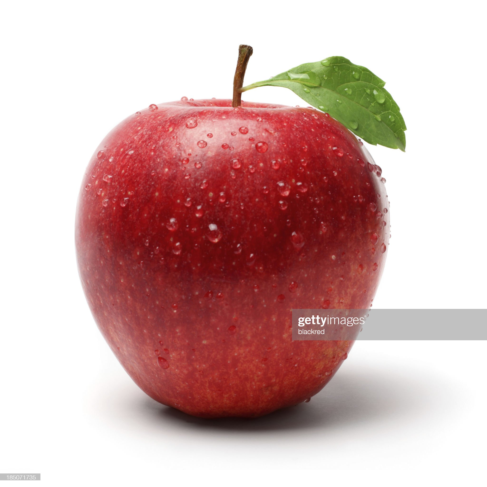
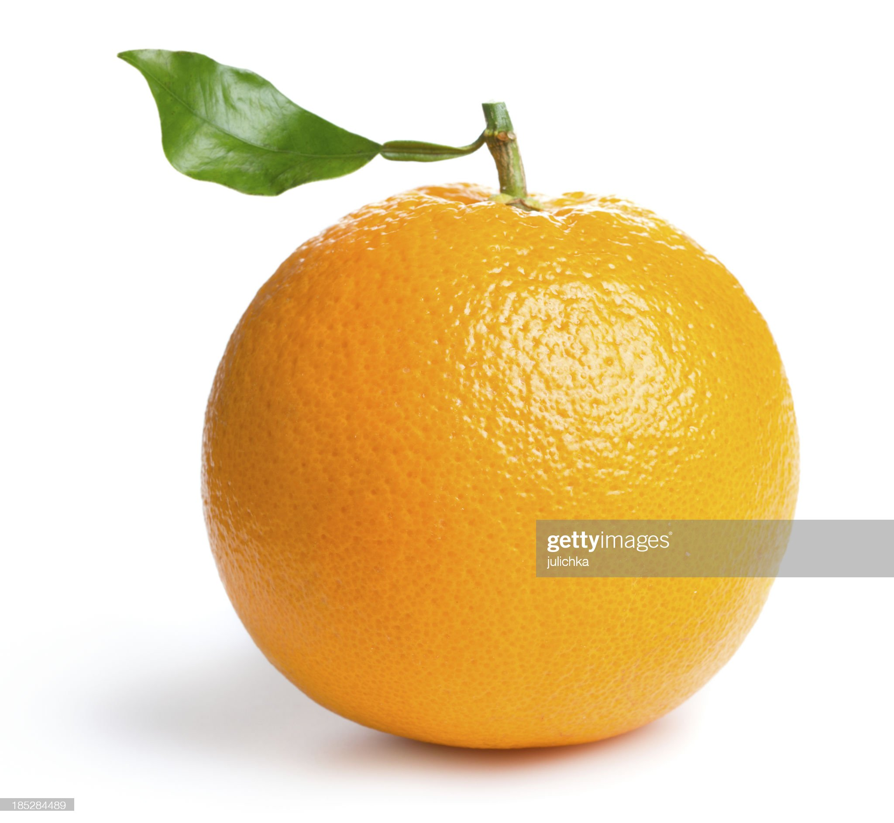
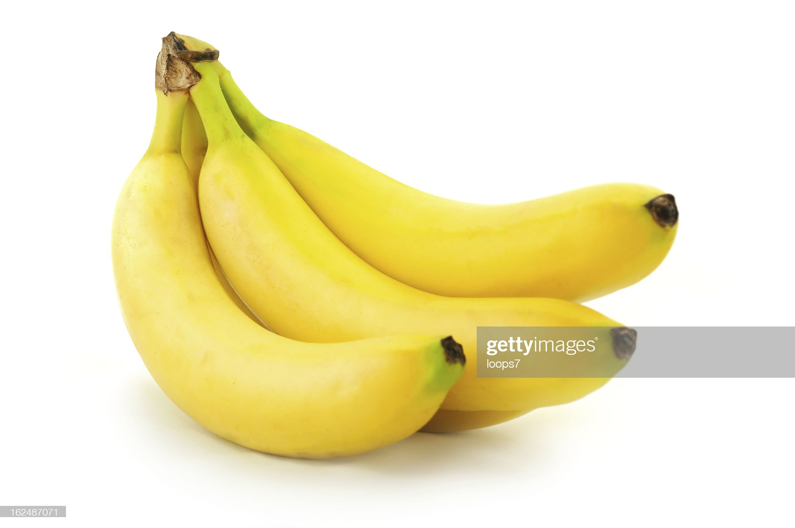
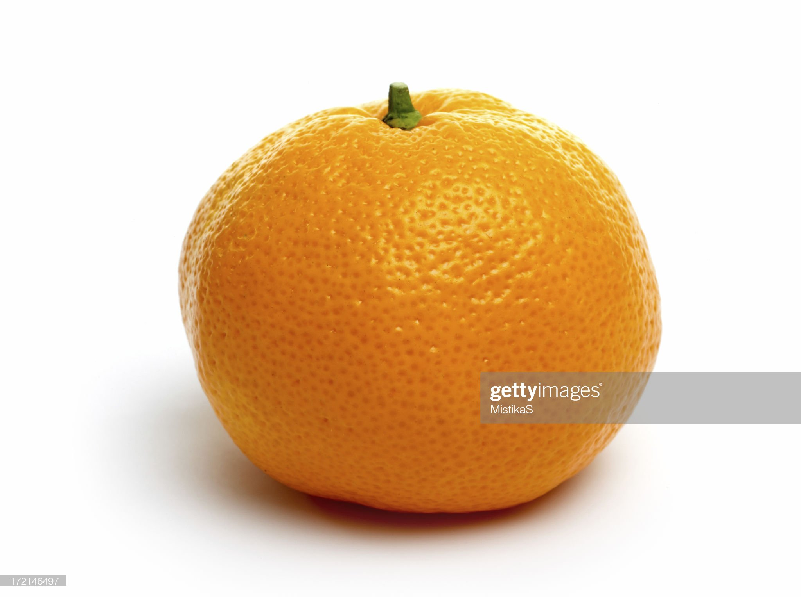
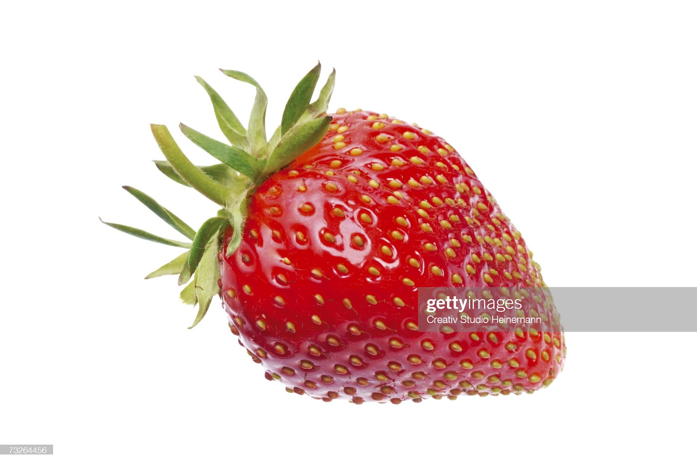

Manzana
La manzana es una fruta muy saludable y nutritiva, y es una buena fuente de varias vitaminas, minerales y antioxidantes.

Naranja
La naranja es una fruta cítrica muy saludable y nutritiva, y es una buena fuente de varias vitaminas, minerales y antioxidantes.

Banana
Fruto del bananero, comestible, de forma alargada y algo curvada, pulpa de color blanquecina y piel lisa de color amarillo que se desprende con facilidad.

Mandarina
Fruto del mandarino, parecido a la naranja, de forma achatada por la parte superior e inferior, cáscara de color anaranjado brillante, muy fácil de separar, y pulpa muy dulce.

Frutilla
La frutilla, también conocida como fresa, es una fruta deliciosa, jugosa y nutritiva. Es una buena fuente de varios nutrientes importantes y antioxidantes.